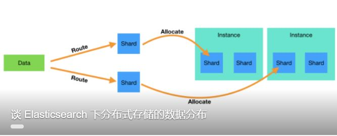

您有新的推荐内容，点击查看
清华AI画虾师，想当现代齐白石
安妮 发自 凹非寺量子位 出品 | 公众号 QbitAI这只AI不简单啊。就是它，让撒贝宁面露难色，难做决断，在节目现场...
量子位 人工智能 2天前 来自 量子位 5457 阅读 22 评论
Peter教你谈情说AI | 07决策树(上)—既能回归又能分类的模型
决策树前面我们讲了线性回归模型和朴素贝叶斯分类模型。前者只能做回归，后者只能做分类。但本文中要讲的决...
人人都是极客 人工智能 1天前 来自 人人都是极客 330 阅读 评论
被骂“没前途”，那个996的程序员做错了什么？
有时候奋斗着奋斗着，总会忘记自己为了什么而奋斗，有什么意义呢？ 笔者最近看吴军的新书，得知有一个37%...
程序人生 19小时前 来自 CSDN学院 2481 阅读 7 评论
ACL 2018论文解读 | 基于排序思想的弱监督关系抽取选种与降噪算法
在碎片化阅读充斥眼球的时代，越来越少的人会去关注每篇论文背后的探索和思考。在这个栏目里，你会快速 get...
人工智能 2天前 来自 Paper weekly 692 阅读 2 评论
谷歌AI的七个“不正经”玩法，个个能玩一整天
郭一璞 问耕 发自 凹非寺 量子位 报道 | 公众号 QbitAI谁说AI只能搞一些一本正经的工作？谷歌最近就放出了几只...
量子位 人工智能 2天前 来自 量子位 3259 阅读 3 评论